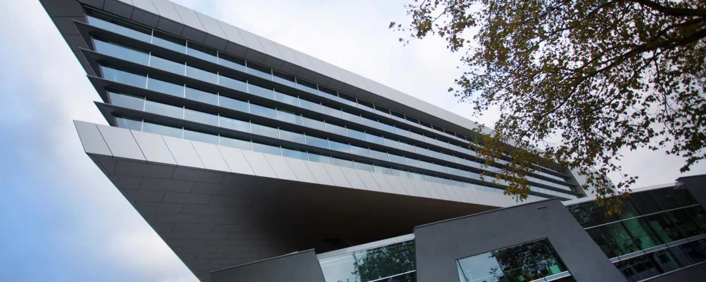

Het samenwerkingsverband tussen technisch (beroeps)onderwijs en technisch
bedrijfsleven is Technovium ROC Nijmegen. Naast de technische sector van ROC Nijmegen herbergen ze
ook tal van zakelijke samenwerkingsverbanden. De gebruikers moeten jongere mensen zijn die
enthousiast zijn over technologie en geïnteresseerd zijn in het kiezen van een technisch
trainingsprogramma. Het gebouw Technovium ROC Nijmegen is gelegen nabij het NS-station Heyendaal in
Nijmegen. De architectuur van het gebouw maakt duidelijk hoe indrukwekkend de techniek is en
genereert daardoor betekenis voor technische studies.